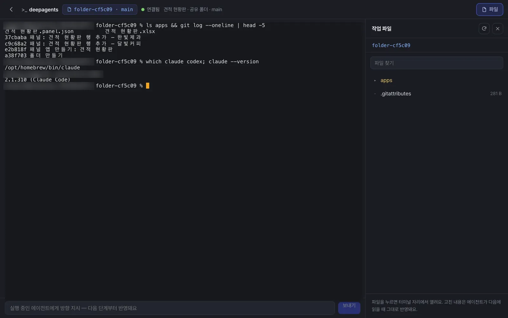

대부분의 일은 채팅으로 충분하지만, 에이전트가 파일을 수십 개 만들고 명령을 실행하는 일(코드, 데이터 정리, 영상 만들기)은 그 작업 폴더를 직접 들여다보고 손대고 싶어집니다. 작업실은 에이전트의 작업 폴더를 파일 목록·파일 보기·터미널로 여는 화면입니다. Claude Code·Codex가 맡은 단계에서는 그 에이전트의 세션이 터미널 주화면에 그대로 이어집니다.
22장까지 장진영 팀장은 채팅과 편집기, 개선 화면만으로 달빛커피 일을 프로세스로 만들고 고쳤습니다. 7부에서는 시야를 넓혀 이 시스템을 키우고 운영하는 쪽을 봅니다. 첫 장은 에이전트가 일하는 작업 폴더를 직접 여는 작업실입니다.
채팅과 작업실, 언제 무엇을#
| 이럴 때 | 채팅 | 작업실 |
|---|---|---|
| 문서 한 장, 표 한 개 고치기 | ✓ 편집기 + 대화(7장) | |
| 결과가 파일 몇 개로 끝남 | ✓ 카드로 받음 | |
| 에이전트가 만든 중간 파일·스크립트를 보고 싶음 | ✓ 파일 목록 | |
| 에이전트가 쓴 파일을 사람이 직접 고쳐서 다음 단계에 넘김 | ✓ 파일 보기에서 고쳐 저장 | |
| 실행 중인 에이전트에게 방향을 바꾸라고 하기 | ✓ 방향 지시 | |
| 명령을 직접 실행(변경 기록 보기, 파일 옮기기) | ✓ 터미널 | |
| Claude Code·Codex가 맡은 단계를 이어서 같이 하기 | ✓ 그 세션이 주화면 |
작업실은 서버에서 명령을 실제로 실행하는 창(셸)을 엽니다. 그래서 들어갈 수 있는 사람이 정해져 있습니다. 그 단계의 담당자·프로세스 참여자, 그 대화의 주인, 공유 폴더라면 편집 권한 이상의 구성원(변형은 실행 권한 이상), 그리고 관리자입니다. 터미널은 열 때마다 한 번만 쓰는 입장권으로 연결되고, 서버에 숨겨 둔 비밀 설정 값은 터미널로 넘어가지 않습니다.
작업실을 여는 곳#
| 어디서 | 무엇이 열리나 | 터미널 주화면 |
|---|---|---|
| 프로세스 단계의 「동작 보기」 → 「작업실 열기」 | 그 단계를 실행한 에이전트의 작업 폴더 | Claude Code가 맡은 단계면 그 Claude Code 세션, 아니면 셸 |
| 공유 폴더 화면의 「작업실」 | 폴더의 기준본(main). 고쳐 저장하면 변경 기록이 하나 남습니다 | 셸 |
| 변형 화면의 「작업실」 | 그 변형의 내 작업 사본 | 셸 |
| 대화 폴더에 남은 파일 카드(「작업실에서 열기」) | 그 대화의 작업 폴더, 파일이 열린 채로 | 셸 + 방향 지시 |
따라 하기 1 — 공유 폴더를 작업실에서 열기#
12장에서 만든 견적 현황판의 데이터는 공유 폴더 견적 현황판에 있습니다. 위쪽 「폴더」 → 견적 현황판 → 머리줄의 「작업실」을 누릅니다.
화면은 셋으로 나뉩니다.
- 가운데 — 터미널: 그 폴더에서 시작하는 셸. 여러 사람이 같은 작업실을 열면 같은 화면을 함께 봅니다.
- 오른쪽 — 작업 파일: 폴더의 파일 목록과 찾기. 파일을 누르면 터미널 자리에서 열리고(「✕ 터미널」로 돌아감), 이음오피스 문서·이미지·마크다운도 공유 폴더와 같은 보기로 열립니다.
- 아래 — 방향 지시: 실행 중인 에이전트에게 “다음 단계부터 이렇게 해”라고 보냅니다(에이전트가 돌고 있을 때만 의미가 있습니다).
터미널에 적어 봅니다. 앞은 apps 폴더의 파일 목록을, 뒤는 이 폴더의 최근 변경 기록 다섯 줄을 보여 줍니다(공유 폴더는 안쪽이 git 저장소입니다 — 13장). which claude codex를 치면 이 서버에 Claude Code·Codex 명령이 있는지도 볼 수 있습니다.
ls apps && git log --oneline | head -5

확인할 것: apps/ 아래에 견적 현황판.panel.json과 견적 현황판.xlsx, 기록에 “패널 앱 만들기: 견적 현황판”과 행 추가 기록. 파일 보기에서 고쳐 저장하면 “작업실에서 고침: …”이라는 기록이 하나 더 생깁니다. 그사이 에이전트가 같은 파일을 바꿨다면 “에이전트가 그사이 이 파일을 바꿨어요. 다시 열어 확인해 주세요.”라며 덮어쓰지 않습니다.
Claude Code·Codex가 맡은 단계를 이어 하기#
채팅의 비서 뒤에서 일하는 Lite의 기본 에이전트는 Deep Agents입니다. 그런데 프로세스의 어떤 단계는 Claude Code나 Codex 같은 코딩 에이전트에게 맡길 수 있습니다(예: SNS 트렌드에 대응하는 기능을 실제 저장소에 구현하는 단계, 시연 영상을 만드는 단계). 이 단계는 Process GPT의 코딩 에이전트 실행 서비스(cli-agent)가 돌리고, 결과는 그 단계의 작업 폴더에 따로 남습니다.
그 단계의 「동작 보기」에서 「작업실 열기」를 누르면:
- 터미널 주화면에 그 단계를 실행한 Claude Code 세션이 이어서 열립니다. 에이전트가 무엇을 했는지 대화 기록 그대로 보이고, 이어서 지시할 수 있습니다.
- 오른쪽에는 그 세션이 만든 파일(코드, 문서, 영상)이 있습니다.
- 「셸」 탭으로 바꾸면 같은 폴더에서 명령을 직접 실행합니다.
예약 미션도 실행 에이전트를 Deep Agents·Claude Code·Codex 중에서 고를 수 있습니다(11장).
이 튜토리얼의 화면
Claude Code가 주화면인 작업실은 Claude Code가 맡은 프로세스 단계가 있어야 열립니다. 위 사진은 공유 폴더 작업실(셸)이고, Claude Code 단계의 작업실은 작업실 시연 영상에서 볼 수 있습니다. 서버에서 Claude Code·Codex를 쓰려면 코딩 에이전트 실행 서비스와 각 CLI의 로그인이 따로 준비되어 있어야 합니다(1장).
대화 파일을 작업실에서 열기#
채팅에서 비서가 대화 폴더에 남긴 파일 중 편집기로 열 수 없는 것(스크립트, 텍스트)은 카드에 「작업실에서 열기」가 붙고, 누르면 그 대화의 작업 폴더가 그 파일이 열린 채로 열립니다. 그 대화의 에이전트가 아직 일하는 중이면 아래 칸으로 방향을 보낼 수 있습니다(“실행 중인 에이전트에 전달했어요 — 다음 단계부터 반영돼요”).
대화 폴더 밖에 저장된 파일
비서는 새 파일을 대화 폴더에 두지만, 작업 공간의 다른 자리에 저장한 파일도 있을 수 있습니다. 그런 파일의 카드에는 「작업실에서 열기」 대신 「눌러서 열기」가 붙습니다. 누르면 서버가 내 카드인지, 작업 공간 안의 파일인지 확인한 뒤 사본을 만들어 엽니다. 문서는 편집기로, 글 파일은 새 탭에 열립니다.
다음 장에서는 채팅·편집기·작업실이 서버 안에서 어떻게 이어져 있는지, Process GPT Lite의 구조를 한 장의 그림으로 봅니다(24장).
확인 문제
- 박서연이 견적 현황판 폴더의 작업실을 열려고 합니다. 폴더에 보기 권한만 있다면 열릴까요?
- 에이전트가 만든
make_quote.py의 단가 하나를 사람이 고쳐서 다음 실행에 쓰게 하고 싶습니다. 어디서 고치나요? - 문서 한 장의 오타를 고치려고 작업실을 여는 것은 좋은 선택일까요?
답
- 열리지 않습니다. 공유 폴더 main의 작업실은 편집 권한 이상이 필요합니다(진짜 셸이 열리기 때문입니다). 변형의 작업실은 실행 권한 이상입니다.
- 그 대화(또는 단계)의 작업실에서 파일을 열어 고치고 저장합니다. “저장했어요 — 에이전트가 다음에 이 파일을 읽을 때 반영돼요.”
- 아닙니다. 문서는 카드를 눌러 편집기에서 고치거나 채팅으로 고치는 편이 빠르고, 편집본·검수 기록도 남습니다. 작업실은 파일·명령 단위로 에이전트의 작업을 들여다보고 손댈 때 씁니다.